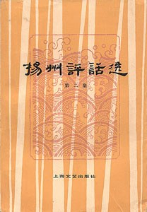
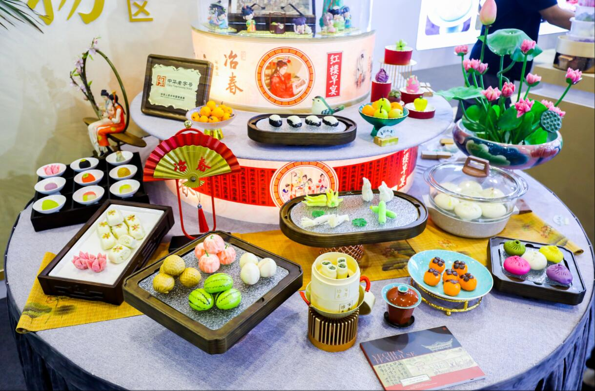
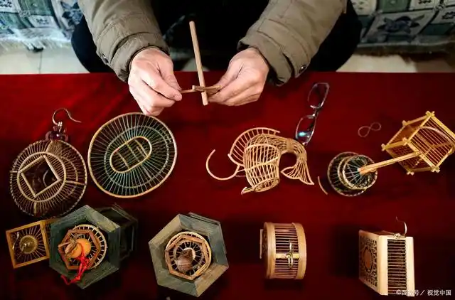
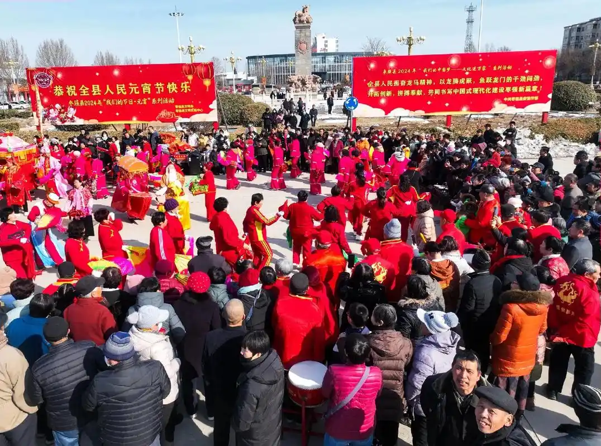

运河船工号子
运河号子是船工们在劳作时唱的劳动号子，反映了运河文化中的劳动智慧和艺术创造。
- 口头传统艺术
- 集体劳动智慧
- 运河文化精髓
传承千年的运河文化精髓
运河号子是船工们在劳作时唱的劳动号子，反映了运河文化中的劳动智慧和艺术创造。

扬州评话是流传于运河沿岸的传统说唱艺术，以其独特的艺术魅力享誉海内外。

运河沿线形成了独特的美食文化体系，包括淮扬菜、杭帮菜等著名菜系。

运河沿线保存着众多传统手工艺，如苏绣、扬州漆器、宋锦等。

运河沿线的传统节庆活动丰富多彩，如清明踏青、端午赛龙舟等。